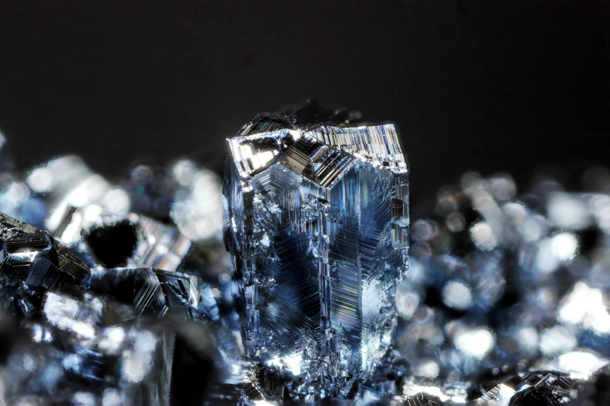

Osmium is a chemical element with symbol Os and atomic number 76, a hard, brittle, bluish platinum-group metal and the densest naturally occurring element, slightly denser than iridium.
Osmium has the highest melting point of the platinum metals and extreme hardness. Powdered osmium slowly oxidises to volatile, highly toxic osmium tetroxide (OsO4), used in electron microscopy staining and fingerprint detection.
Found alloyed as osmiridium in nickel and copper ores. Uses include fountain-pen nib tipping, electrical contacts, and catalysts. Its name derives from Greek osme, smell, for the pungent odour of its oxide.